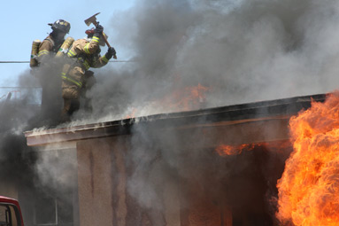

The Facts
 Arizona’s traditional public pension system is the best way to ensure our state’s taxpayers reliably receive vital services. It is a cost-effective, proven, stable method to attract and retain qualified first responders.
That said, to fully consider the future of the public safety pension system, it is imperative to understand the FACTS and dispel the MYTHS.
FACT
The public safety pension system safeguards
the delivery of vital taxpayer services.
For more than 40 years in Arizona, the traditional public pension system (the Public Safety Personnel Retirement System) has proven to be a stable, reliable, and cost-effective method for providing vital taxpayer services.
Continuing to provide a modest pension – last year, the 9,000 PSPRS retirees received an average benefit of $44,000 – enables municipal governments to retain and recruit the strong and experienced workforce they so badly need. A new system could put these vital services at risk.
It’s a MYTH that Arizona taxpayers will benefit from radical reform of the public safety pension system.
Many cities around the state already have a difficult time attracting and retaining quality public safety employees. A new pension system of private accounts with lower, unstable retirement income will further diminish the ability of cities and towns to attract and retain a solid workforce that serves taxpayers – especially for high-risk and stressful positions.
FACT
Taxpayers will pay MORE
to move to thousands of private accounts.
Taxpayers will foot the bill for the high costs to change from a proven pension system to a radical new system of thousands of private accounts. Estimates indicate that the costs to shut down the traditional pension system, set up millions of new private accounts, and educate participants could cost the state tens of millions of dollars. Where will this money go? To the same Wall Street fund managers who lost fire fighters’ and taxpayers’ money in the first place.
Taxpayers also will pay an additional cost for death and disability pension benefits. These benefits are critical for police, firefighters and other public safety officers in hazardous occupations. Without traditional pensions, Arizona will have to pay commercial insurance companies to set up death and disability plans, or fund the plans itself. Either way, taxpayers pay more.
It’s a MYTH that taxpayers will save money by dismantling the public pension system.
In fact, reforming a tried and true pension system is a risky gamble. Changing to a system of private accounts is like putting money in the slot machine and hoping to win with three “7s.”
FACT
States that have attempted
defined contribution reforms of public pensions have failed.
States that have experimented with private accounts as workers’ primary retirement benefit have found that a traditional pension plan is a better option. These states recognized that traditional pension plans are cost-effective, efficient, create value, and help workers attain a modest, stable retirement.
For example, West Virginia moved from a traditional pension plan to private accounts – and then recently right back to a traditional plan. Florida, Nebraska, and North Dakota also found that a new system of private accounts was not a success.
FACT
Taxpayers will foot the bill for workers who outlive
inadequate, unstable retirement income.
We need to learn from the mistakes of others, rather than repeat their errors.
Not everyone has the time, resources, or experience to be a good investor. Some will win, but most will lose. It is unreasonable to expect individual investors to outperform the professional investors who manage traditional pension assets. Under a new system of private accounts, many workers will find they have lower and inadequate retirement income.
It’s a MYTH that private accounts will generate increased retirement income.
States that experimented with private accounts saw lower investment returns – nearly a 50 percent reduction.
While the public safety pension debate can at times be complicated, the subject of the Deferred Retirement Option Plan (DROP) shouldn’t be. DROP helps taxpayers, employers and public safety employees.
- DROP saves taxpayers money by giving retirees a single, lump sum payout up front in return for diminished retirement benefits over time.
- DROP allows municipalities to keep experienced fire fighters and police officers on the job longer and to plan for future personnel needs.
- DROP gives retirees a much-needed nest egg as they step into retirement.
Before explaining DROP, let’s look at the pension of an “average” fire fighter with a retirement calculated after a 25-year career and a final salary of $60,000/year. That fire fighter will receive an annual pension benefit of 62.5 percent, or $37,500/year. Over 20 years, the total pension received would be $750,000.
What happens if that fire fighter works the same quarter century, but spends the last five years in DROP?
Upon retirement, this fire fighter will earn a DROP lump sum payment of $184,000. That sounds huge – and it will be for the retiree and their family – but it also brings with it a long-term savings for taxpayers.
First, the employer will have not made five years of pension contributions while the worker is in DROP. That savings? More than $60,000 at current annual contribution rates. Even more significantly, the fire fighter who DROPs will receive a decreased 50 percent retirement benefit, or $30,000/year. Over 20 years, that decrease saves taxpayers $150,000 – and it will keep saving taxpayers money every year thereafter.
While the math sounds confusing, the savings is apparent. The retiree who enters DROP at 20 years and retires five years later saves taxpayers $26,000 over 20 years. At the same time, the fire fighter is helped into retirement while the employer benefits from an experienced worker and better planning.
The myth that DROP is a budget buster is exactly that – a myth. DROP changes the timing of benefits paid, paying out retirees less money from the pension plan they’re vested in. Today, approximately 1,900 first responders in the Public Safety Personnel Retirement System are eligible for DROP.
At $26,000 in savings per person, DROP has the potential to save taxpayers more than $49 million over the next 20 years.
Budget buster? The facts absolutely say otherwise.